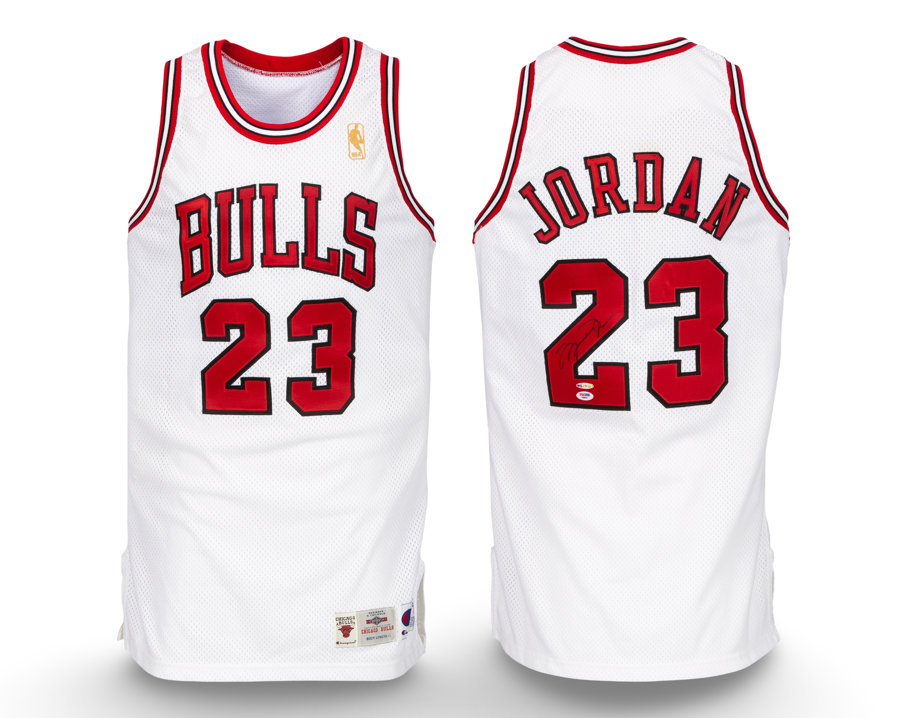

1996–97
Population totals may include privately held examples not publicly disclosed at the request of ownership.
Population Summary
| Style | Confirmed | Public | Status |
|---|---|---|---|
| Home | 1 | 1 | ⏳ |
| Away | 2 | 1 | ⏳ |
| Alternate | 1 | 1 | ⏳ |
The Michael Jordan Archive population study is an ongoing research initiative. Population conclusions reflect best-available documentation and comparative review.

HOME

Game imagery used where no physical public example exists.
View Documentation
Photo Match Details
- Authentication: Yes
- Photo-Matched: Yes
- Photo-Matched By: Resolution Photomatching
- Games Photo-Matched: 1
Documented Games
- Mar 18, 1997 — Seattle Supersonics
Research & Provenance
The jersey is accompanied by a letter from the Chicago Bulls referencing its original sale through the team's charitable foundation.
Public Sale

AWAY

Publicly documented example.
View Documentation
Photo Match Details
- Authentication: Yes
- Photo-Matched: Yes
- Photo-Matched By: MeiGray
- Games Photo-Matched: 17
Documented Games
- Dec 19, 1996 Charlotte Hornets
- Dec 26, 1996 Atlanta Hawks
- Jan 15, 1997 Minnesota Timberwolves
- Jan 19, 1997 Houston Rockets
- Jan 23, 1997 Cleveland Cavaliers
- Jan 28, 1997 Vancouver Grizzlies
- Jan 31, 1997 Golden State Warriors
- Feb 2, 1997 Seattle Supersonics
- Feb 4, 1997 Portland Trailblazers
- Feb 14, 1997 Atlanta Hawks
- Feb 27, 1997 Cleveland Cavaliers
- March 11, 1997 Boston Celtics
- March 12, 1997 Philadelphia 76ers
- March 14, 1997 New Jersey Nets
- April 3, 1997 Washington Bullets
- April 6, 1997 Orlando Magic
- April 3, 1997 New York Knicks
Research & Provenance Notes
This jersey is accompanied by a Letter of Provenance from The Chicago Bulls and was owned by a private collector pre sale.
Public Sale

ALTERNATE
Publicly documented example.
View Documentation
Photo Match Details
- Photo-Matched: Yes
- Photo-Matched By: MeiGray
- Games Photo-Matched: 1
Documented Games
- Apr 13, 1997 — Detriot Pistons
Research & Provenance Notes
Extremley rare example, additionally photomatched to multiple basketball cards. This 1996–97 Chicago Bulls altenrate uniform comes with a team letter from the Chicago Bulls orginization.